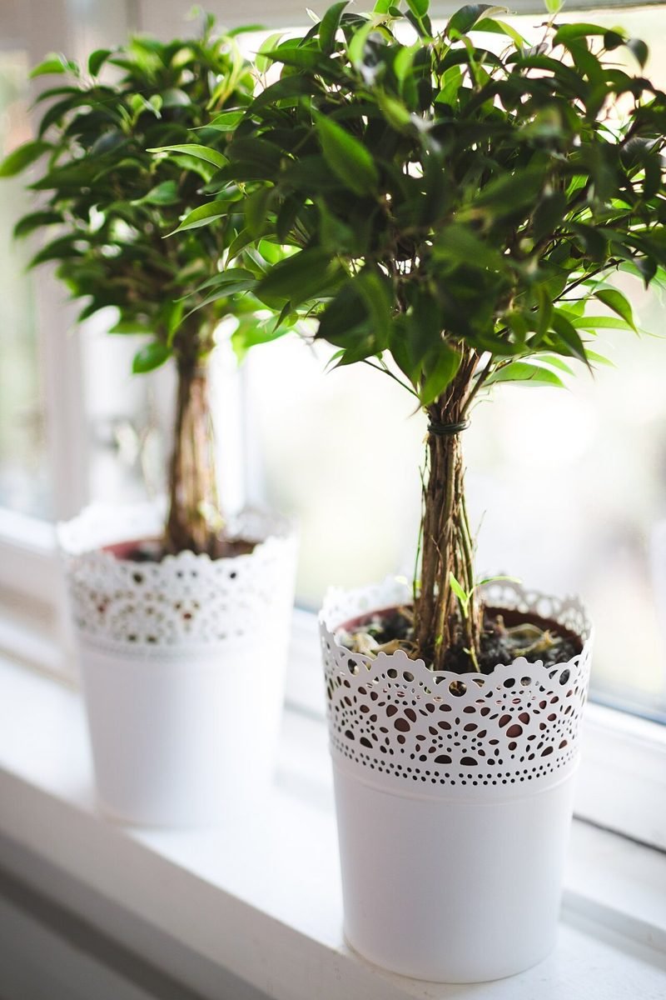

店のこと
店のこと
お店について確認できているのは、所在地とInstagramのアカウントだけです。
確認できていること
- 店名は「HARENOE」、業種はカフェ
- 所在地は鳥取県鳥取市本町1丁目206
- 電話番号はなし。連絡はInstagramから
- 営業時間・定休日・メニュー・価格・ご予約・駐車場は準備中

想像してみる
名前の響きから
「HARENOE」の読み方や由来は分かりません。制作側は、スペルを眺めて7つの旗を思い浮かべ、このデザインにしました。お店の実際の姿とは関係のない連想です。

